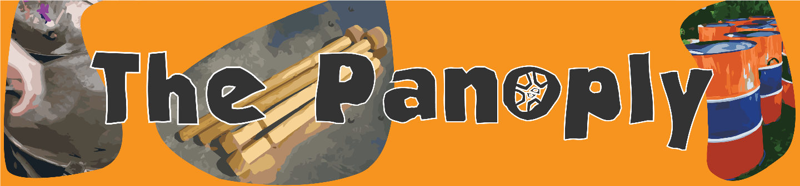

Hej där! Vi är The Panoply Steelband - en grupp engagerade musiker som spelar oljefat runtom i Stockholm och resten av landet med utgångspunkt i Södertälje. Vår repertoar innehåller de flesta typer av musik - allt från hårdrock, till modern pop, till karibisk musik. Vi spelar både covers och egenkomponerad musik.
Vi spelar oljefat - ett instrument som ursprungligen kommer från Trinidad och Tobago. Instrumentet är tillverkat av gamla oljetunnor och består av olika stämmor. Ljudbilden är energisk och fartfylld, och påminner lite om en blandning av kyrkklockor och xylofoner. Vi underhåller på event, fester, konserter, festivaler, och liknande.
Vi erbjuder även prova på-workshops och musikquiz. Boka oss om du vill ha en unik upplevelse till ditt event!